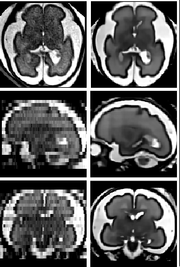
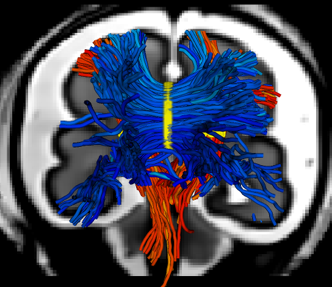
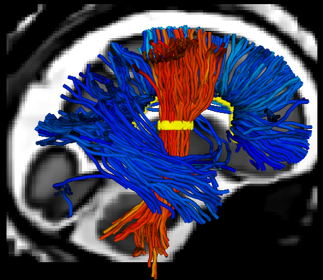

Studies about brain maturation aim at providing a better
understanding of brain development and links between brain changes and
cognitive development. Such studies are of great interest for diagnosis
help and clinical course of development and treatment of illnesses.
Several teams have begun to make 3D maps of developing brain structures
from children to young adults. However, working out the development of
fetal and neonatal brain remains an open issue. This project aims at
jumping over several theoretical and practical barriers and at
going beyond the formal description of the brain maturation thanks to
the development of a realistic numerical model of brain aging.
BTK (baby brain toolkit), which is the toolkit developed for the fbrain project, consists of several image processing tools: image reconstruction, image denoising, image segmentation, tractography etc.

Left: original low-resolution image, right: reconstructed image.


Coronal and sagital views of white matter tractography of a fetal brain (corpus callosum, pyramidal fasciculus).
Binairies are available for MacOSX and Linux 64bits, they are ready-to-use.
 BTK-v1.0-MacOSX-Intel-64.dmg
BTK-v1.0-MacOSX-Intel-64.dmg
BTK-v1.0-Linux-x64.tar.gz
The source code is available for download, for compiling see install page here
You can also clone the project with Git
For compiling see install page here
Run :
$ git clone git://github.com/rousseau/fbrainAnd Checkout the lastest stable tag
$ git checkout Btk_1.0
Run :
$ git clone git://github.com/rousseau/fbrain
For Further informations, here is the documentation (PDF), and here is a link to the QuickStart wiki page.
This software is governed by the CeCILL-B license under French law and abiding by the rules of distribution of free software. You can use, modify and/ or redistribute the software under the terms of the CeCILL-B license as circulated by CEA, CNRS and INRIA at the following URL "http://www.cecill.info". As a counterpart to the access to the source code and rights to copy, modify and redistribute granted by the license, users are provided only with a limited warranty and the software's author, the holder of the economic rights, and the successive licensors have only limited liability. In this respect, the user's attention is drawn to the risks associated with loading, using, modifying and/or developing or reproducing the software by the user in light of its specific status of free software, that may mean that it is complicated to manipulate, and that also therefore means that it is reserved for developers and experienced professionals having in-depth computer knowledge. Users are therefore encouraged to load and test the software's suitability as regards their requirements in conditions enabling the security of their systems and/or data to be ensured and, more generally, to use and operate it in the same conditions as regards security.